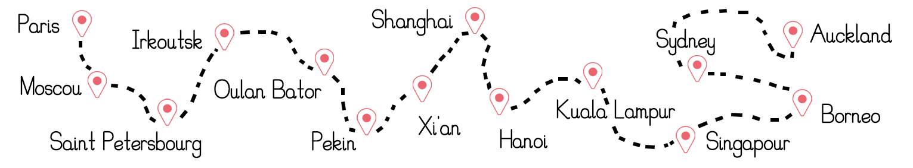

LISA et MAXIME

17 AOÛT 2022
17 août 2022 Mairie de Coublevie 11 chemin d’Orgeoise 38500 Coublevie puis La Grange aux Fées 5183 route de la Sûre 38880 Autrans
Cette journée, que l’on espère belle, se déroulera en deux temps. D'abord, la cérémonie civile prendra place à la mairie de Coublevie . Pas d’inquiétude pour vous stationner, il y a un parking en libre accès sur place. À l’issue de cette première partie, quelques photos de groupe seront prises, puis tout le monde pourra prendre la direction du Vercors ! *youpi* Il faut compter 1h de route pour vous rendre jusqu’à la Grange aux Fées, à Autrans. La route est belle, un peu sinueuse, prenez votre temps. Une fois au gîte, chacun et chacune pourrez découvrir vos chambres pour la nuit, ainsi que vous rafraîchir ou, peut-être, passer une petite laine. Nous nous retrouverons ensuite pour la cérémonie laïque. Une fois celle-ci terminée et les larmes essuyées, il sera (enfin) temps de trinquer ! Le vin d’honneur, le repas et la bamboche jusqu’au petit jour se dérouleront également sur place. Concernant le repas, pour tout régime alimentaire particulier, merci de nous en faire part.
Pour ceux qui viennent de loin, vous trouverez facilement à vous loger sur Voiron ou dans le Pays Voironnais pour la nuit qui précèdent le mariage. N’hésitez pas à nous consulter pour des idées ou conseils. Quant à la nuit du 17 au 18 août, le gîte de la Grange aux Fées ainsi que le gîte de groupe Des 4 temps nous permettent de loger tout le monde sur place ! *joie et bonheur* Vous allez me dire « Mais, enfin, pourquoi prévoir de quoi se coucher si l’on prévoit de ne pas dormir ? » Eh bien comme mieux vaut prévenir et afin de pouvoir festoyer en toute liberté sans la contrainte de reprendre le volant ou de faire de la route, vous pouvez, si vous le souhaitez, rester sur place. Nous vous demanderons alors une petite participation financière (rien d’indécent promis). Même si on ne vous verra pas dans le Vercors, sauter à l’élastique, on vous offre l’opportunité d’y passer une douce nuit d’été. Et ça, c’est quand même cool.
Pour ceux qui rejoindraient l’Isère par les chemins de fer, nous essaieront de favoriser le covoiturage. Donc, si vous avez besoin d’être transportés ou si vous pouvez accueillir des non locaux (bouh) dans votre automobile, faites-nous signe ! Qu’il s’agisse de vous récupérer en amont du mariage ou de vous permettre de rejoindre Autrans, on s’arrangera !
Pour les petits curieux qui s’interrogeraient sur la suite des événements pour nous, voici un aperçu du voyage que nous aimerions entreprendre. Rejoindre Moscou depuis Paris en train, puis la Chine, le Japon, Singapour … Objectif final : un Permis Vacances Travail en Nouvelle-Zélande !
